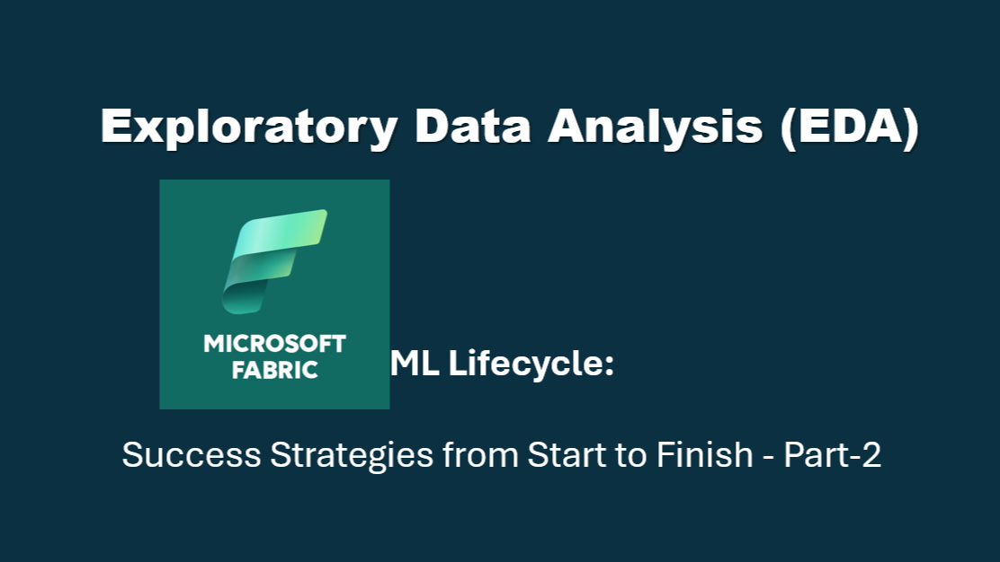
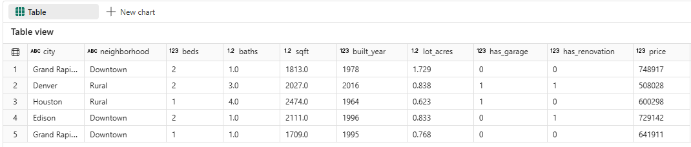
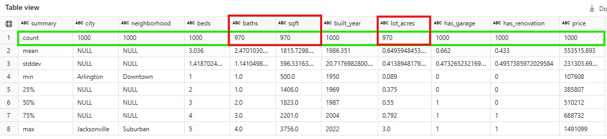
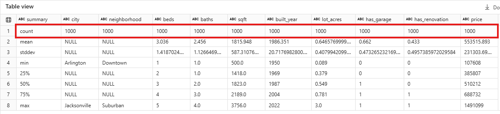
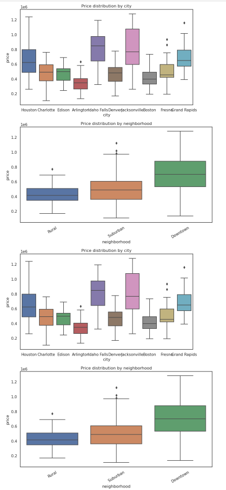
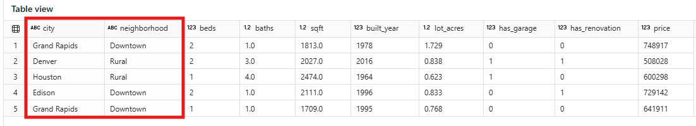
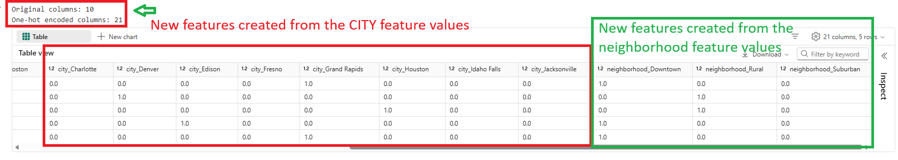
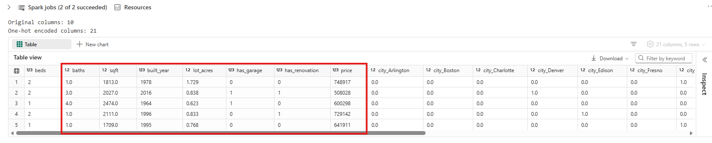
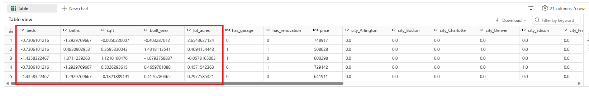

Fabric ML Lifecycle: Success Strategies from Start to Finish - Part-2
Exploratory Data Analysis (EDA) & Pre-Processing

Table of Contents:
- Introduction to EDA : Why EDA matters and how it shapes modeling decisions.
- Dataset Understanding: Quick scan of structure, columns, and data types.
- Schema & Completeness Checks: Identify missing, inconsistent, or unexpected values.
- Missing Value Imputation: Apply simple, reliable strategies to fill gaps.
- Distribution & Outlier Analysis: Spot skew, variability, and unusual patterns.
- Frequency Tables: Understand categorical balance and dominant groups.
- Correlation Analysis: Reveal relationships that influence the target.
- Feature Engineering Prep: Prepare data for encoding and scaling.
- Save Cleaned Dataset: Produce a ready‑to‑model dataset for the next phase.
- Partnering with Tech-Insight-Group: Your Data Implementation Ally
- Call to action
Stay in the loop, follow us on LinkedIn to catch fresh articles every week.
This blog was inspired by Jean Joseph, a Data & AI driven professional with over tweenty years of experience helping organizations unlock insights through analytics and AI. If you are looking for consulting and training services, please reach out to the Tech-Insight-Group LLC team.
Prerequisites for Completing This Hands‑On Exercise
- Access to a Microsoft Fabric Tenant: You must have access to a Microsoft Fabric-enabled tenant. If your organization has not enabled Fabric yet, contact your administrator to activate it.
- A Provisioned Fabric Capacity: To run notebooks, Spark workloads, and Lakehouse operations, you need a Fabric capacity (F‑SKU or P‑SKU, trial capacity).
- A Lakehouse in Your Workspace: Create a new Lakehouse where you will store and explore the dataset. This Lakehouse will serve as the foundation for all EDA steps in this article.
- Download and Upload the Dataset: Download the regression_housing.csv file provided with this article. Then upload it into the Files section of your Lakehouse so it can be accessed by your notebook.
- A Fabric Notebook: Create a new Fabric Notebook inside the same workspace. You will run all the code snippets from this article inside that notebook using the built‑in Spark runtime.
- Once these prerequisites are complete, you’re ready to follow the hands‑on instructions to perform Model Training and Model Evaluation in Part 3, which will prepare you to deploy the ML model and test it using batch scoring in Part 4.
Who is this article for?
These series of article are designed for data professionals, business leaders, and technical teams who want to successfully implement machine learning projects that deliver real business value. Whether you are a data scientist, ML engineer, or decision-maker exploring AI adoption, you’ll benefit from learning a proven, end-to-end strategy from framing the right problem to building and deploying scalable solutions in Microsoft Fabric.
This is a four-part article, and you are currently reading the Second Part. What is the objective here? It’s to share and remind you how to properly tackle a machine learning (ML) project from the ground up.
Success in ML doesn’t come from algorithms alone, it depends on how the entire pipeline is designed and aligned with business goals. Every step in the ML lifecycle, from data ingestion to deployment, has direct implications for cost efficiency, scalability, and customer trust. If the foundation is weak, even the most advanced models will fail to deliver meaningful results.
Our goal is to guide you through an end-to-end process that starts with identifying and framing the right problem, then leveraging Microsoft Fabric for development and implementation.
Introduction
This is the Second Part of this series of articles. In Part 1, we explained how to frame your machine‑learning problem, validate that ML is the right tool, and determine which type of model to use once the problem is clearly defined. With the problem properly scoped, and the ML approach identified, the next essential step is understanding the data that will power your solution.
In this Part 2, we focus on Exploratory Data Analysis (EDA), one of the most critical, yet often overlooked, phases of any ML workflow. EDA helps you uncover patterns, distributions, anomalies, biases, and relationships within your dataset before you ever train a model.
By visualizing and summarizing the data, you gain early insight into data quality issues, feature behavior, and potential signals that drive model performance. Ultimately, a solid EDA foundation leads to better features, stronger models, and more confident decision‑making throughout the ML lifecycle.
Dataset introduction (short narrative)
First, let us understand our dataset. regression_housing.csv file contains residential property records used to model sale price (target) from property and location attributes (features). Typical columns include city, neighborhood, beds, baths, sqft, built_year, lot_acres, has_garage, has_renovation, and price. The goal is to understand the distribution, quality, and signal in these variables, especially how price varies by location and property characteristics, before feature engineering or modeling.
Let us start exploring the dataset by loading the regression_housing.csv file into a Spark DataFrame, automatically detecting column types and treating empty values as nulls, so the data is ready for cleanup and analysis.
# Replace the path with your file location in the Lakehouse:
csv_path = "Files/csv/ml/regression_housing.csv"
# Read with header, infer schema; we'll fix types afterwards to be safe.
raw_data_df = (
spark.read
.option("header", "true")
.option("inferSchema", "true")
# Treat empty strings as nulls to simplify downstream casting
.option("nullValue", "")
.csv(csv_path)
)
display(raw_data_df.limit(5))
This below screenshot shows the first five rows of the housing dataset, confirming that key fields, such as city, neighborhood, beds, baths, square footage, build year, lot size, garage/renovation indicators, and price were correctly loaded and parsed into the DataFrame.
Now that we’ve loaded the contents of the CSV file into a Spark DataFrame, it’s important to understand the structure of the data before moving further. Inspecting the schema with raw_data_df.printSchema() allows us to verify that each column has been read with the correct data type and ensures that numerical, categorical, and boolean fields are properly interpreted. This early check helps prevent downstream issues in cleaning, feature engineering, and modeling, making it a best practice in any EDA workflow.
# Pretty tree view of the schema
raw_data_df.printSchema()
Quick completeness check (missing values per column)
Knowing the content and schema definition of the CSV file, the next step is to generate descriptive statistics to understand how the numeric features behave overall using summary(). By reviewing minimum, maximum, mean, and standard deviation values, we can quickly validate whether ranges look reasonable for example, square footage typically falls within a few hundred to several thousand square feet, while lot acreage is usually small and often skewed.
# raw_data_df.describe().show()
# More robust summary (includes percentiles for numeric cols)
display(raw_data_df.summary())
Below screenshot is the output of the above scripts, it clearly shows missing data when we examine the count statistics for each feature: columns like baths, sqft, and lot_acres report a count of 970 instead of the full 1000 rows, indicating 30 nulls in each, whereas other columns (e.g., beds, built_year, price) show complete counts, a signal that these partially missing fields need imputation or special handling before modeling.
This output also helps reveal important characteristics such as the spread of built_year and the presence of heavy tails in the price distribution, which are critical to recognize before moving deeper into EDA or modeling.
Next, perform a quick completeness check to validate the missing‑value information observed in the summary() output using the below scripts.
from pyspark.sql import functions as F
# Get all column names from the raw dataset
cols = raw_data_df.columns
# Compute missing value count for each column
missing_counts = raw_data_df.select([
F.sum(F.when(F.col(c).isNull(), 1).otherwise(0)).alias(c) for c in cols
])
# Display missing value summary as a single-row table
display(missing_counts)
This completeness check confirms our earlier findings: the columns baths, sqft, and lot_acres each contain exactly 30 missing values, while all other fields including the target price have zero missing entries. This validates that only these three features require imputation, and the rest of the dataset is fully complete.

Handling Missing Values (Imputation Step)
In a real project, best‑practice missing‑value handling would involve more robust strategies such as median imputation, distribution‑aware methods, or even model‑based techniques, especially for skewed numeric features. However, because this is a small synthetic dataset used purely for demonstration, we will keep things simple and rely on approxQuantile and mean‑based imputation to fill the missing values.
Here is what we are doing in the script below. We cast sqft, lot_acres, and baths to numeric and impute with medians (via approxQuantile) because medians are robust to skew and outliers, giving stable fills for right‑tailed housing features. Using approxQuantile is efficient at scale and delivers tight estimates without collecting the entire column.
We add a fallback to mean (or 0) only if a column is entirely null, ensuring the pipeline never breaks. Completing imputation to reach full counts across columns avoids bias, data loss from row drops, and model failures from NaNs, making the dataset consistent and ready for reliable feature engineering and ML training.
from pyspark.sql import functions as F
# Columns to impute
target_cols = ["sqft", "lot_acres", "baths"]
# 1) Cast target columns to numeric (DoubleType) if needed
df_num = raw_data_df.select([
F.col(c).cast("double").alias(c) if c in target_cols else F.col(c)
for c in raw_data_df.columns
])
# 2) Compute medians using approxQuantile
# relativeError=0.001 gives a tight approximation while staying efficient
medians = {}
for c in target_cols:
# Handle the case where column is all nulls (approxQuantile returns empty)
quantiles = df_num.stat.approxQuantile(c, [0.5], 0.001)
medians[c] = quantiles[0] if quantiles else None
# Optional: if a column has no non-null values, fall back to 0 or mean
fallbacks = {}
for c in target_cols:
if medians[c] is None:
# fallback to mean; if mean is also None, fallback to 0
mean_val = df_num.select(F.mean(F.col(c))).first()[0]
fallbacks[c] = mean_val if mean_val is not None else 0.0
# Combine medians with fallbacks
fill_values = {c: (medians[c] if medians[c] is not None else fallbacks[c]) for c in target_cols}
# 3) Impute nulls
df_imputed = df_num.na.fill(fill_values)
# Preview results
display(df_imputed.summary()) # quick sanity check
Notice that after applying our imputation steps, the summary output now shows a count of 1000 for every column, including sqft, baths, and lot_acres which previously had missing values. This confirms that all null entries were successfully filled using the median (with fallbacks where needed), resulting in a fully complete dataset with no gaps. This is an essential prerequisite before moving into deeper EDA, feature engineering, or modeling.
Uncovering Distribution Patterns to Understand Data Structure
Uncovering distribution patterns helps reveal the underlying structure of the data, allowing us to identify skewness, outliers, and variability early so that downstream analyses and models are built on a more accurate understanding of how the data truly behaves.
Median and IQR Analysis for Price Variation Across Locations
These scripts compute median price and price spread (IQR) for each city and neighborhood so you can clearly compare which markets are most expensive, which are cheapest, and which have the most variability in home prices.
from pyspark.sql import functions as F
# Median (p50) and IQR per city
city_stats = df_imputed.groupBy("city").agg(
F.expr("percentile(price, 0.5)").alias("median_price"),
F.expr("percentile(price, 0.25)").alias("p25_price"),
F.expr("percentile(price, 0.75)").alias("p75_price"),
F.count("*").alias("n")
).withColumn("IQR_price", F.col("p75_price") - F.col("p25_price")) \
.orderBy(F.desc("median_price"))
display(city_stats)
# Median (p50) and IQR per neighborhood
nhood_stats = df_imputed.groupBy("neighborhood").agg(
F.expr("percentile(price, 0.5)").alias("median_price"),
F.expr("percentile(price, 0.25)").alias("p25_price"),
F.expr("percentile(price, 0.75)").alias("p75_price"),
F.count("*").alias("n")
).withColumn("IQR_price", F.col("p75_price") - F.col("p25_price")) \
.orderBy(F.desc("median_price"))
display(nhood_stats)
What the two below outputs from the above scripts are telling you (summary)
Cities (first output):
- Jacksonville and Idaho Falls have the highest median prices, meaning they are the most expensive markets in your dataset.
- Cities like Arlington and Boston have lower medians.
- IQR values differ widely, showing that some cities have more price variability than others.
Neighborhoods(second output):
- Downtown has the highest median and the largest IQR, confirming a premium, diverse-price market.
- Suburban is mid‑priced.
- Rural is the least expensive with the smallest price spread.
Finding Robust Outliers in Pricing and Property Metrics
Now that you have a solid understanding of Median and IQR Analysis for Price Variation Across Locations, it’s important to recognize that this approach is also ideal for detecting outliers.
Robust Outlier Detection for Pricing and Property Metrics provides essential insight into extreme or unusual values that may distort analysis, bias models, or hide meaningful trends in the data. Using statistically grounded methods such as the IQR rule, this technique identifies listings with abnormally high prices, unusually large lot sizes, or atypical property characteristics that could mislead averages, skew correlations, or weaken predictive models.
def iqr_bounds(col):
# Compute Q1 and Q3 using approximate quantiles
q = df_imputed.approxQuantile(col, [0.25,0.75], 0.001)
Q1, Q3 = q[0], q[1]
# Calculate IQR and standard outlier bounds
IQR = Q3 - Q1
lower = Q1 - 1.5*IQR
upper = Q3 + 1.5*IQR
return lower, upper
rows = []
for c in ["price","sqft","lot_acres","baths","beds"]:
# Get lower/upper bounds for each numeric column
lower, upper = iqr_bounds(c)
# Count outliers below and above the IQR thresholds
cnt_low = df_imputed.filter(F.col(c) < lower).count()
cnt_high = df_imputed.filter(F.col(c) > upper).count()
# Store results for summary table
rows.append((c, lower, upper, cnt_low, cnt_high))
# Create summary DataFrame of outlier counts per column
out_df = spark.createDataFrame(rows, ["column","lower_bound","upper_bound","num_below","num_above"])
# Display columns sorted by highest number of high-end outliers
display(out_df.orderBy(F.desc("num_above")))
As shown in the output below from the above sripts completion, Median and IQR Analysis helps detect outliers by calculating robust lower and upper bounds for each feature and identifying how many values fall outside them. This reveals extremely large lot sizes, high-end prices, and unusually large homes that could distort averages and weaken predictive models.
Method recap: Outliers are values < Q1 − 1.5×IQR (lower bound) or > Q3 + 1.5×IQR (upper bound).
1) lot_acres:
- Bounds: lower ≈ −0.2225 (not meaningful for acres), upper ≈ 1.3815
- Outliers: 58 above, 0 below
- Meaning: Many properties have lot sizes > 1.3815 acres, indicating a long right tail (large parcels). These can skew averages and may represent luxury/rural listings.
2) price:
- Bounds: lower ≈ −69,514.5 (not meaningful), upper ≈ 1,142,185.5
- Outliers: 16 above, 0 below
- Meaning: There are 16 high‑priced listings (> $1.14M). Price is right‑skewed with a high‑end segment; these can bias means/correlations and affect model residuals.
3) sqft:
- Bounds: lower ≈ 260.5, upper ≈ 3,344.5
- Outliers: 4 above, 0 below
- Meaning: A few homes exceed 3,344.5 sqft (large properties). Smaller than 260.5 sqft is rare/impossible here, hence only high outliers.
4) beds:
- Bounds: lower ≈ −1.0, upper ≈ 7.0
- Outliers: 0 above, 0 below
- Meaning: Bed counts fall within 0–7; no outliers by IQR. Distribution is well‑contained.
5) baths:
- Bounds: lower ≈ −2.0, upper ≈ 6.0
- Outliers: 0 above, 0 below
- Meaning: Bath counts are within 0–6; no outliers detected. Stable, discrete distribution.
To summarize, detecting these outliers early ensures cleaner data, more stable model performance, and a clearer understanding of true market behavior, ultimately enabling more accurate pricing insights and more reliable decision‑making.
Frequency tables
What the frequency tables imply for these plots
Frequency tables are essential because they show how often each unique value appears in a categorical or discrete feature, helping you quickly understand the distribution, dominance, and balance of categories in the dataset. They make it easy to spot issues such as rare categories, class imbalance, unusual patterns, or unexpected entries, all of which directly impact feature engineering, encoding decisions, sampling strategies, and model performance.
- If your frequency tables show many more Downtown than Rural homes (or vice versa), it affects:Stability: More records → more reliable box estimates.Outlier density: Small groups can show outliers more prominently because each point represents a larger fraction.
# Frequency tables for key categorical columns
for c in ["city","neighborhood","has_garage","has_renovation"]:
# Compute value counts sorted by highest frequency
freq = df_imputed.groupBy(c).count().orderBy(F.desc("count"))
# Display distribution for each column
display(freq)
For has_garage / has_renovation:
- If most homes have a garage, then garage-related price differences may be subtle in global plots. Better to stratify (e.g., price by neighborhood and garage presence).
- If renovations are rare, outliers in price for renovated homes will stand out, but conclusions should be cautious.
Why it matters:
- It tells you how many records come from each city and neighborhood.
- It shows the class balance for has_garage and has_renovation (e.g., many houses with garages vs. without).
- Any imbalance affects how you interpret the boxplots and how reliable comparisons are. If one city or neighborhood has only a handful of homes, its distribution will be noisier.
Price by city/neighborhood (boxplot via pandas for visualization)
When it comes to outliers, one of the best ways to quickly spot areas with unusually high or inconsistent values is to rely on boxplots, because they clearly show the median, IQR range, and any points that fall outside the whiskers.
# Price by city/neighborhood (boxplot via pandas for visualization)
# Sample 20% of data and convert to pandas for plotting
pdf = df_imputed.select("city","neighborhood","price").sample(0.2, seed=7).toPandas()
import seaborn as sns, matplotlib.pyplot as plt
# Boxplot: price distribution across cities
fig, ax = plt.subplots(figsize=(9,5))
sns.boxplot(data=pdf, x="city", y="price")
ax.set_title("Price distribution by city")
display(fig)
# Boxplot: price distribution across neighborhoods
fig, ax = plt.subplots(figsize=(10,5))
sns.boxplot(data=pdf, x="neighborhood", y="price")
ax.set_title("Price distribution by neighborhood")
ax.tick_params(axis='x', rotation=30)
display(fig)
What do the below figures produced by the above scripts show?
A) Price distribution by city (top & third plots):
- Each boxplot summarizes median price (center line), IQR (box), range without outliers (whiskers), and outliers (dots) for each city.
- You can quickly compare cities: Some cities (e.g., those with taller boxes and higher medians) show higher typical prices and greater variability. Cities with more dots above the whiskers have more high-end outliers (luxury listings or very large properties).
B) Price distribution by neighborhood (second & bottom plots)
- Downtown shows the highest median and widest spread, indicating expensive and variable pricing.
- Suburban has a moderate median with a few high-price outliers.
- Rural displays the lowest median and tightest spread, suggesting more consistent, lower pricing.
The duplicated city and neighborhood plots appear because the script generates and displays two separate figures for each (likely re-run cells or intended to compare different renders).
To summarize, there are many techniques for detecting and handling outliers, but for the sake of this demo we won’t dive deeper into them and will instead shift our focus toward understanding how the features relate to one another.
Analyzing Feature Relationships Through Correlation
In supervised machine learning, relationships between features matter because models learn patterns from how variables interact and influence the target. Understanding these relationships early in EDA helps reveal which features move together, which ones may add redundant information, and which truly carry predictive signal.
To explore these interactions, we’ll use the .corr() method to compute correlation values and gain a clearer view of how our numerical features relate to one another before moving into modeling using below scripts.
# Simple Pandas/Seaborn approach (for small datasets)
import seaborn as sns
import matplotlib.pyplot as plt
# Convert selected numeric and binary columns to pandas for correlation analysis
pdf = (df_imputed
.select("beds", "baths", "sqft", "built_year", "lot_acres",
"has_garage", "has_renovation", "price")
.toPandas())
# Compute Pearson correlation matrix
corr_mat = pdf.corr(method="pearson") # DataFrame of correlations
# Plot heatmap of correlations
plt.figure(figsize=(10, 8))
sns.set(style="white", font_scale=1.0)
sns.heatmap(
corr_mat,
annot=True,
fmt=".2f",
cmap="coolwarm",
vmin=-1, vmax=1,
square=True,
linewidths=.5
)
plt.title("Correlation Heatmap (Pearson)")
plt.tight_layout()
plt.show()
How to Read below Heatmap output produced by aboce codes (Simple Explanation)
Takeaway: These codes will generate a heatmap shows that sqft is the most important numeric driver of price here, while other features have very small linear relationships.
Each cell shows how strongly two variables move together. Values range from –1 to +1:
- Red = positive correlation: when one goes up, the other tends to go up.
- Blue = negative correlation: when one goes up, the other tends to go down.
- White/gray = little or no relationship.
Key Insights From This Heatmap:
- Square footage (sqft) has the strongest positive correlation with price (~0.33). → Bigger homes tend to be more expensive.
- Beds, baths, lot size, built year, garage, renovation show weak correlations with price (near 0). → In this dataset, they do not strongly influence price on their own.
- Diagonal = 1.0 because every variable is perfectly correlated with itself.
So far in our workflow, we’ve successfully ingested the raw dataset, performed the essential cleaning steps, and carried out a structured exploratory data analysis. We examined variable distributions, identified and quantified outliers using robust IQR‑based methods, and explored how different features relate to one another through correlation analysis and visualizations like boxplots.
With a solid understanding of the data’s structure, quality, and relationships, we’re now ready to move into the next critical phase of the machine learning pipeline: feature engineering, where we’ll transform and enhance the dataset to make it more suitable and more powerful for model training.
Feature Engineering: Preparing Data for Machine Learning Success
Feature engineering is essential because it transforms raw data into meaningful, model‑ready inputs, helping machine learning algorithms capture the right patterns, reduce noise, and ultimately deliver more accurate and reliable predictions.
If you recall, our dataset contains categorical features such as city and neighborhood, and since machine learning models cannot work directly with text-based categories, we need to convert these fields into numerical format through feature engineering techniques like one‑hot encoding.
What is One-Hot enconding?
One‑hot encoding is a method that converts each categorical value into a separate binary column, marking 1 for the matching category and 0 for all others. Let us use below codes to proceed.
import pandas as pd
from sklearn.preprocessing import OneHotEncoder
cat_cols = ["city", "neighborhood"]
# Extract only categorical columns to pandas (efficient for encoding)
pdf_cat = df_imputed.select(cat_cols).toPandas()
# Fit OneHotEncoder and transform categorical values into binary columns
enc = OneHotEncoder(handle_unknown="ignore", sparse_output=False) # use sparse_output=True for large data
X_cat = enc.fit_transform(pdf_cat)
oh_cols = enc.get_feature_names_out(cat_cols)
# If you want the full encoded pandas DataFrame:
# Convert full Spark DataFrame to pandas for merging encoded features
pdf_full = df_imputed.toPandas()
# Build final DataFrame: drop original categorical columns, add encoded ones
df_oh = pd.concat(
[pdf_full.drop(columns=cat_cols).reset_index(drop=True),
pd.DataFrame(X_cat, columns=oh_cols)],
axis=1
)
# Compare feature counts before and after encoding
print("Original columns:", len(pdf_full.columns))
print("One-hot encoded columns:", len(df_oh.columns))
# Preview encoded dataset
display(df_oh.head(5))
Thank you for the great work, your progress is clear and genuinely appreciated. As you continue, keep in mind that one-hot encoding can significantly expand the feature space, as shown in the image: the original dataset had 10 columns, but after encoding, it grew to 21.
Too many features can hurt model performance, so one-hot encoding should be applied thoughtfully. There are other encoding techniques that can achieve similar results with fewer dimensions, such as target encoding or embeddings but we won’t cover those here. Staying mindful of feature volume will help maintain accuracy, efficiency, and scalability.
Take a look at the same dataset, even though we’ve completed one-hot encoding, there’s still more work to be done. Several features, such as square footage, lot size, and year built, vary widely in scale and units. Without proper scaling, these differences can distort model behavior and reduce performance. That said, let’s now deep dive into feature scaling to ensure our inputs are balanced and ready for modeling.
Feature Scaling & Standardization
Why do we need feature scaling?
Feature scaling ensures that all input features contribute equally to the model by putting them on a similar scale. Without it, features with larger ranges (like square footage or lot size) can dominate distance-based models or slow down gradient-based optimization. Scaling improves model accuracy, convergence speed, and interpretability.
Let us execute these below codes and display the first top five rows
import numpy as np
from sklearn.preprocessing import StandardScaler
target_col = "price" # label
feature_cols = [c for c in df_oh.columns if c != target_col]
# Numeric columns to scale (skip one-hot 0/1 by nunique==2)
# Identify numeric columns to scale (exclude one-hot encoded 0/1 columns)
num_cols = [
c for c in feature_cols
if np.issubdtype(df_oh[c].dtype, np.number) and df_oh[c].nunique() > 2
]
oh_cols = [c for c in feature_cols if c not in num_cols] # keep as-is
# Fit scaler on TRAIN ONLY in a real pipeline; for demo we fit on all
# Fit scaler (note: in production, fit only on TRAIN split)
scaler = StandardScaler(with_mean=True, with_std=True)
scaler.fit(df_oh[num_cols])
# Create the final scaled dataframe
# Apply scaling to numeric columns
df_scaled = df_oh.copy()
df_scaled[num_cols] = scaler.transform(df_scaled[num_cols])
# Preview scaled dataset
display(df_scaled.head(5))
The output below shows that only the numeric features were standardized using above scripts, which is why columns like beds, baths, sqft, built_year, and lot_acres now appear as scaled values centered around zero. As a result, the dataset looks much more balanced, the wide‑range numeric features are now on a similar scale, while the one‑hot encoded city columns remain as simple 0/1 indicators. This is exactly the behavior we expect from the script.
Therefore, the dataset is not a problem, we intentionally standardized only the numeric features that needed scaling, and left the one‑hot encoded columns untouched because scaling them would distort their meaning.
Now that our dataset has been fully cleaned, encoded, and scaled, we can save this final version for the next stage of our workflow. The script below writes the processed dataset to a dedicated output folder, ensuring it’s neatly organized and ready for reuse. With this cleaned dataset stored, we’re all set to move on to model training, which we’ll cover in Part 3.
import os
# Output directory for the cleaned, fully prepared dataset
out_dir = "Files/csv/ml/cleaned"
os.makedirs(out_dir, exist_ok=True) # create all missing parent folders
# Build full file path and save the scaled dataset
out_path = os.path.join(out_dir, "regression_housing_cleaned.csv")
df_scaled.to_csv(out_path, index=False)
# Confirm save location
print(f"Saved to: {out_path}")
Summarization
Today you completed a full round of data preparation for your housing regression project. You started with exploratory data analysis (EDA) to understand the structure, distributions, and potential issues in the raw dataset. Then you cleaned the data, applied one‑hot encoding to convert categorical features into machine‑readable form, and standardized the numeric columns to bring them onto a more balanced scale.
If you’re not very comfortable writing code, you can rely on Fabric Data Wrangler to handle much of the early EDA and data preparation for you. It provides an intuitive, no‑code interface for profiling your dataset, detecting missing values, previewing distributions, and applying common cleaning steps before moving into more advanced analysis.
Along the way, you inspected the transformed outputs, verified that the dataset now looks more consistent and model‑ready, and confirmed why only numeric features not one‑hot columns should be scaled. Finally, you saved the fully processed dataset so it’s ready to be used in the next phase.
With this foundation in place, you’re now set up for Part-3, where you’ll move into model training using this cleaned, explored, and standardized dataset.
Call To Action
💡 Ready to Take the Next Step?
If you’re reading this to kick off your first AI, Data project, streamline your current workflow, or upskill your team for what’s next. Tech-Insight-Group LLC is here to help. We specialize in turning AI potential into practical impact through expert consulting and hands-on training. Visit our services page to explore how we can support your journey from strategy to execution. Let’s build something extraordinary together.
🙏 We welcome your feedback, let’s connect.
Thank you for reading Fabric ML Lifecycle: Success Strategies from Start to Finish – Part 2: Focusing on Exploratory Data Analysis (EDA) & Pre‑Processing. If you found this article helpful, feel free to like, share, or leave a comment; we’d love to hear your thoughts.
Kudos to our entire team for their dedication, and a special shoutout to Jean Joseph, our Principal Data & AI Architect, whose vision and technical leadership made this work possible.